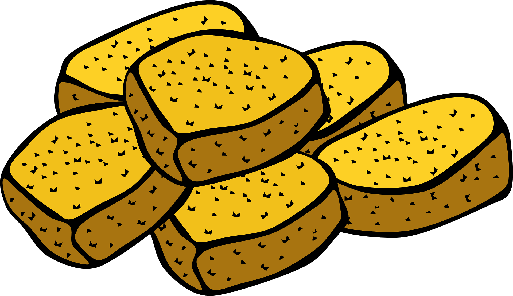

Chicken Nuggets

Ingredients
For the chicken
- 500 g chicken breast fillet
- olive oil, for frying
For the marinade
- 500 g strained yogurt
- salt
- pepper
- 2 teaspoon(s) paprika, sweet
- thyme, dry
For the breading
- 250 g all-purpose flour
- 200 g dry breadcrumbs
- 3 eggs
- salt
- pepper
For the mayo-honey sauce
- 2 tablespoon(s) mustard
- 2 tablespoon(s) honey
- 1 tablespoon(s) olive oil
- 140 g
- salt
- pepper
Steps
- Cut the chicken into pieces. Season with salt and pepper and place in a large bowl.
- Add 500 g yoghurt, 2 teaspoons paprika and dry thyme and mix until completely coated. Cover bowl with plastic wrap and refrigerate for 2 hours or overnight.
- When ready, remove the chicken pieces from the marinade and put them in a baking pan.
- Prepeare 3 separate bowls. Add 250 g flour to the first bowl. Add 3.eggs, salt and pepper to the second bowl, and lightly beat them. Add 300 g panko bread crumbs to the third bowl,
- First, dredge the chicken in the flour mixture, making sure it is properly coated.
- Then dip them into the egg mixture with a slotted spoon.
- Lastly dredge them in panko breadcrumbs, until completely coated.
- Pour a generous amount of sunflower oil into a deep pan. Heat over medium to high heat until it reaches 170* C (338* F).
- Fry the chicken fillets in the oil, until crispy, golden brown and cooked through.
- When ready, transfer to a serving platter lined with kitchen paper.
- To make the honey-mayo sauce, add 1/2 cup mayonnaise, 2 tablespoons mustard, 1 tablespoon oil, 2 tablespoons honey, a pinch of salt and a pinch of pepper in a bowl. Mix with a spoon until completely combined, smooth and creamy.
- Serve the chicken nuggets with honey-mayo sauce and a nice green salad.